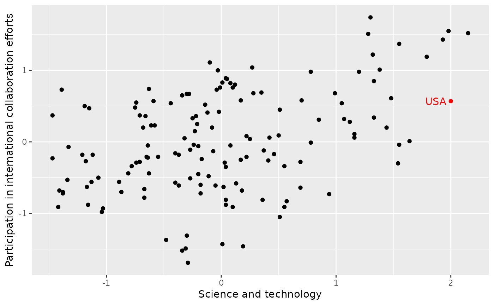
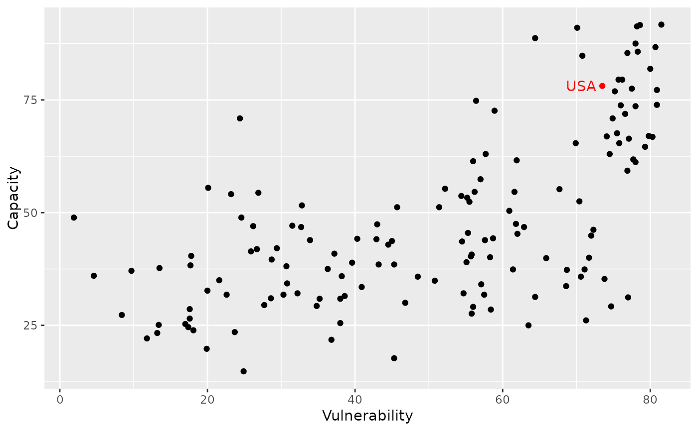

This dataset comes from the 2005 Environmental Sustainability Index: Benchmarking National Environmental Stewardship. Countries are given an overall sustainability score as well as scores in each of several different environmental areas.
Format
A data frame with 146 observations on the following 29 variables.
- code
ISO3 country code.
- country
Country.
- esi
Environmental Sustainability Index.
- system
ESI core component: systems
- stress
ESI core component: stresses
- vulner
ESI core component: vulnerability
- cap
ESI core component: capacity
- global
ESI core component: global stewardship
- sys_air
Air quality.
- sys_bio
Biodiversity.
- sys_lan
Land.
- sys_wql
Water quality.
- sys_wqn
Water quantity.
- str_air
Reducing air pollution.
- str_eco
Reducing ecosystem stress.
- str_pop
Reducing population pressure.
- str_was
Reducing waste and consumption pressures.
- str_wat
Reducing water stress.
- str_nrm
Natural resource management.
- vul_hea
Environmental health.
- vul_sus
Basic human sustenance.
- vul_dis
Exposure to natural disasters.
- cap_gov
Environmental governance.
- cap_eff
Eco-efficiency.
- cap_pri
Private sector responsiveness.
- cap_st
Science and technology.
- glo_col
Participation in international collaboration efforts.
- glo_ghg
Greenhouse gas emissions.
- glo_tbp
Reducing transboundary environmental pressures.
Source
ESI Component Indicators. 2005 Environmental Sustainability Index: Benchmarking National Environmental Stewardship, Yale Center for Environmental Law and Policy, Yale University & Center for International Earth Science Information Network (CIESIN), Columbia University
In collaboration with: World Economic Forum, Geneva, Switzerland Joint Research Centre of the European Commission, Ispra, Italy.
Available at https://www.earth.columbia.edu/news/2005/images/ESI2005_policysummary.pdf.
Details
ESI and Component scores are presented as standard normal percentiles. Indicator scores are in the form of z-scores. See Appendix A of the report for information on the methodology and Appendix C for more detail on original data sources.
For more information on how each of the indices were calculated, see the documentation linked below.
References
Esty, Daniel C., Marc Levy, Tanja Srebotnjak, and Alexander de Sherbinin (2005). 2005 Environmental Sustainability Index: Benchmarking National Environmental Stewardship. New Haven: Yale Center for Environmental Law and Policy
Examples
library(ggplot2)
ggplot(esi, aes(x = cap_st, y = glo_col)) +
geom_point(color = ifelse(esi$code == "USA", "red", "black")) +
geom_text(
aes(label = ifelse(code == "USA", as.character(code), "")),
hjust = 1.2, color = "red"
) +
labs(x = "Science and technology", y = "Participation in international collaboration efforts")

ggplot(esi, aes(x = vulner, y = cap)) +
geom_point(color = ifelse(esi$code == "USA", "red", "black")) +
geom_text(
aes(label = ifelse(code == "USA", as.character(code), "")),
hjust = 1.2, color = "red"
) +
labs(x = "Vulnerability", y = "Capacity")
